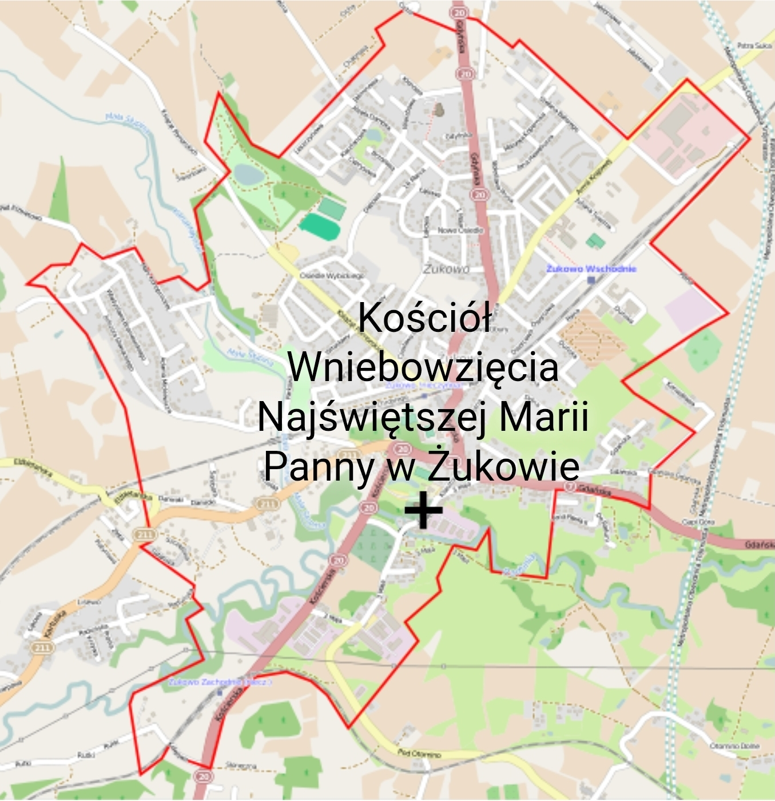
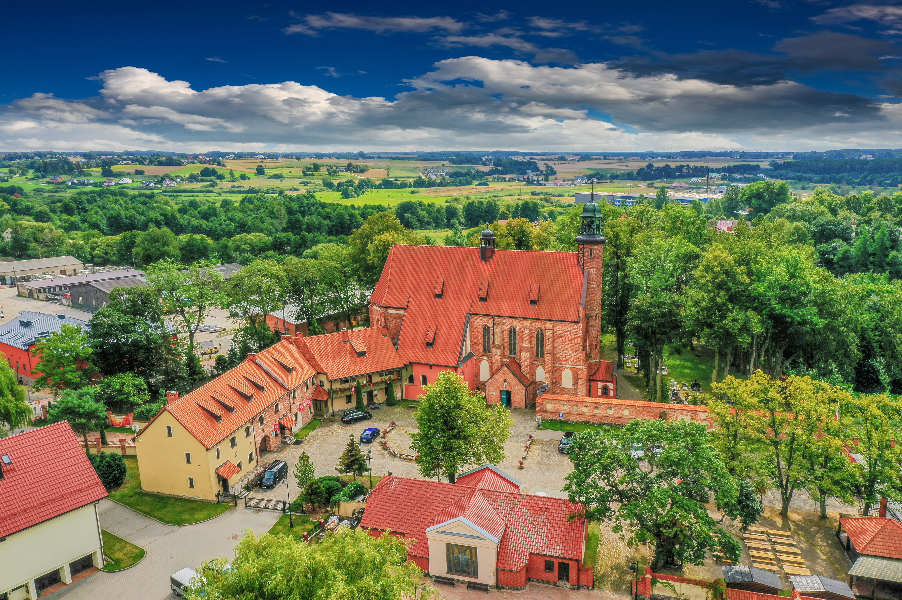
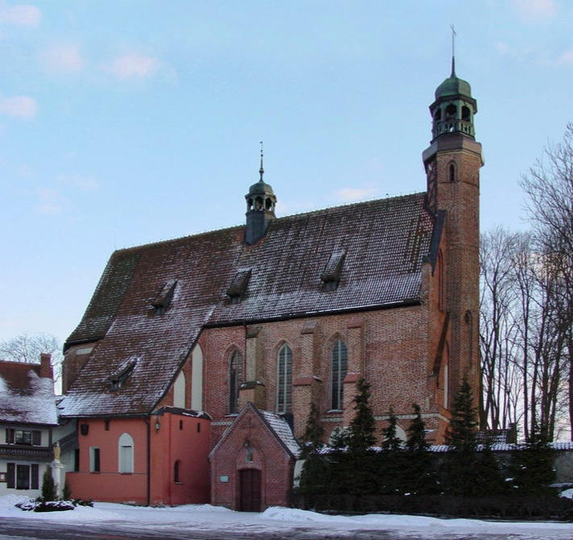
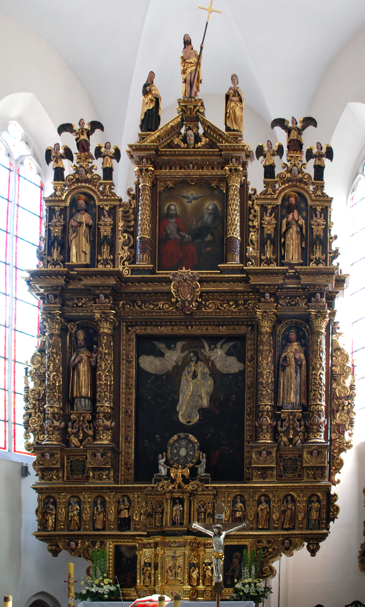

Kościół Wniebowzięcia NMP w Żukowie
Kościół pw. Wniebowzięcia Najświętszej Maryi Panny
Żukowo – miasto położone na Pomorzu Gdańskim, w historycznym regionie Kaszub.
Gmina Żukowo – gmina miejsko-wiejska w województwie pomorskim.
Powiat kartuski, województwo pomorskie.

Historia
Kronika kościoła norbertanek od XIV wieku po kasatę pruską
Kościół zbudowany w XIV wieku przez siostry norbertanki. Mury pamiętają Książąt Pomorskich z XIII wieku. Zbudowano go wraz z klasztorem przeniesionym z pobliskiej Stolpy (dawna część Żukowa) po najeździe z 1226 r.
Kościół był w posiadaniu klasztoru aż do 1834 r., kiedy został skasowany przez rząd pruski. W 1836 r. przejęła go parafia żukowska. Budynki klasztoru zostały sprzedane, a w dawnej stajni urządzono plebanię.
Z klasztoru ocalał kościół klasztorny, stajnia i wozownia, budynek z filarem na środku i sklepieniem, mur z wnękami z przedstawieniami zakonnic oraz figura św. Norberta na dziedzińcu. Cmentarz przykościelny pochodzi z XVII wieku.

Architektura
Badania archeologiczne, faza gotycka i sklepienia świątyni
Badania archeologiczne z 1999 r. wykazały dwie fazy budowy kościoła w średniowieczu: z 1375 r. i 1433 r.
Kościół wzniesiony został z cegły, w stylu gotyckim, o wymiarach: długość 38 metrów, szerokość 9 metrów i wysokość 14 metrów.
We wnętrzu zastosowano dwa rodzaje sklepień: krzyżowe i kolebkowe. Elewacje zewnętrzne zakrystii i klatki schodowej na chór pochodzą z początku XVIII w.

Wyposażenie
Zabytkowe ołtarze, tryptyki, dzwony i organy
XVII-wieczny ołtarz główny z obrazami Hermana Hana (Madonna wśród Aniołów i Trójca Przenajświętsza), relikwiarzem i figurami świętych. XVI-wieczny ołtarz Świętej Rodziny z figurą Matki Boskiej Wadzińskiej, ołtarz św. Norberta (XVIII w.), tryptyk antwerpski z życiem Jezusa (XVI w.) oraz tryptyk Mestwina (poświęcony Mestwinowi I i Zwinisławie).
Empora chórowa połączona z amboną (ukończona 23 lipca 1766 r.), tęcza z XVII w. oraz krzyż nad wejściem do zakrystii z ok. 1360 r. Obrazy z XVIII w., w tym Norbertanki Zamordowane przez Prusów w 1226 r. i Zdjęcie z krzyża.
Sygnaturka z 1737 r. i dwa dzwony z lat 50. XX w. (,,Maria" i ,,Norbert"). 25-głosowe organy z lat 50. XX w. na dawnym chórze panien (ciemnozielony prospekt, miech, traktura pneumatyczna, dmuchawa elektryczna – wymagające remontu).
